Governance and growth in India under Modi and the BJP
In 2014, Narendra Modi promised India better governance and a booming economy. We built the India that would likely have existed without Modi – and compared it with the India he actually delivered.
“PM Modi has done an unbelievable job in India. I know the liberal Press here, they beat the hell out of him when he’s taken 400 million people out of poverty.” – Jamie Dimon, CEO of JPMorgan Chase, 2024
“The Indian government is one of the most appalling in the world.” – Amartya Sen, Nobel Laureate in Economics, 2023
Same country. Same decade. Same data. They can’t both be right – and it’s checkable.
01 · The promises
Modi’s 2014 campaign made two concrete promises. The first was prosperity: “You gave Congress 60 years, give BJP just 60 months. We will change India’s future and bring about development in 60 months.” The second was clean, effective government – “minimum government, maximum governance.”
These weren’t promises to muddle through. They were promises to beat business as usual – to deliver the growth and governance that the old status quo would not have produced. That framing matters, because it tells you exactly how to grade him: compare Modi’s India against the India that would have existed without him.
A decade in, there are four ways the report card could have come back:
| Governance | |||
|---|---|---|---|
| Improves | Declines | ||
| Economy | Improves | Modi Promisericher and freer | Strongman Bargaingrowth at democracy’s expense |
| Declines | Democratic Paradoxfreer but poorer | Worst Caseneither | |
The rest of this page is the data’s answer.
02 · The measuring stick
You can’t rerun the last decade without Modi. The next best thing is a data-driven stand-in: “Synthetic India,” a weighted blend of comparable countries, with the weights chosen so that the blend tracks the real India’s trajectory for the thirty years before Modi took office. If a portfolio of countries matches India’s path from 1984 to 2013, its path after 2014 is a credible estimate of the India that Modi inherited but did not govern.
Then the test is simple, and it is exactly the test Modi set for himself: did his India beat that one?
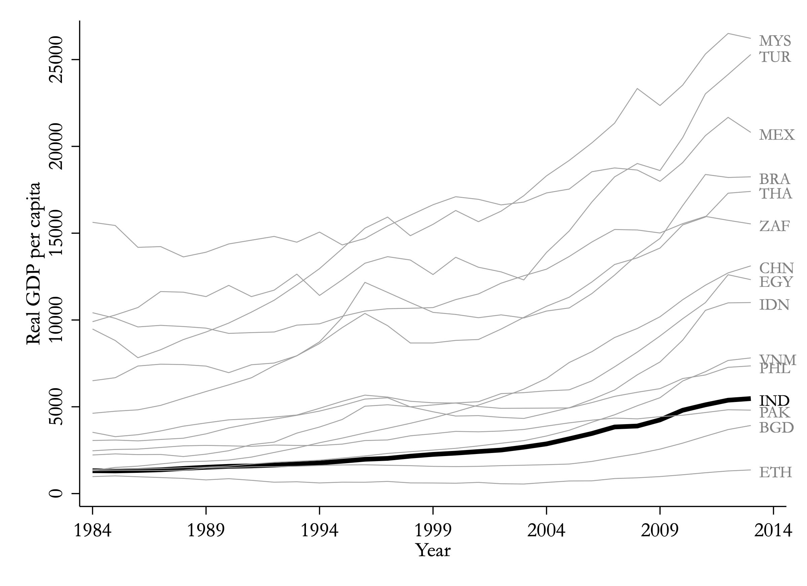
One rule matters: the comparison countries have to be plausible stand-ins for the thing being measured. For income, that means large developing economies – China and Vietnam included. For democracy, one-party states are useless as counterfactuals, so the governance outcomes get their own pool of developing-world democracies. (The full donor-pool logic is in the researcher section below.) Each outcome then gets its own recipe, matched over the same thirty years – and graded the same way: did Modi’s India beat it?
03 · Maximum governance?
We tracked ten indicators of governance and democratic health from the V-Dem project – electoral democracy, liberal democracy, corruption, equality before the law, constraints on the executive, freedoms of expression, association, and religion, and equal protection. For each one we built its own synthetic counterfactual from a pool of developing-world democracies, matched over the same thirty years.
Every panel below plots the same thing: India minus its counterfactual. A flat line at zero means Modi’s India performed exactly as the no-Modi India would have. Watch what happens at the dashed line.
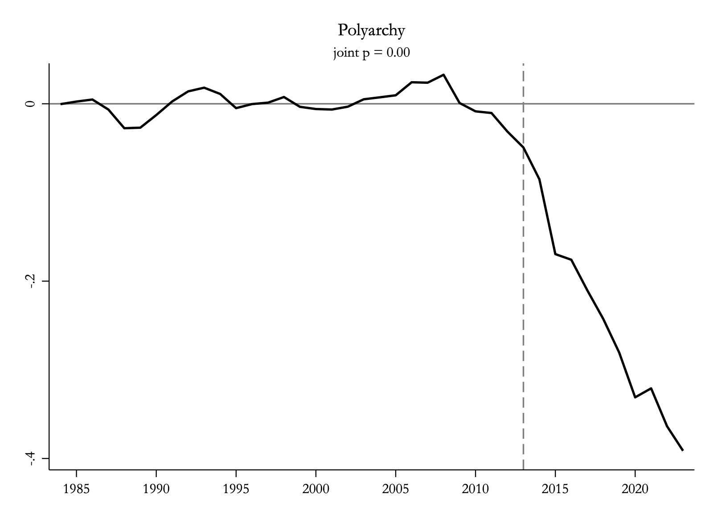
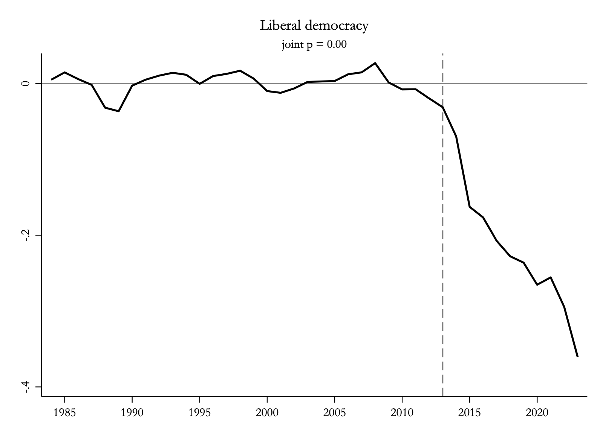
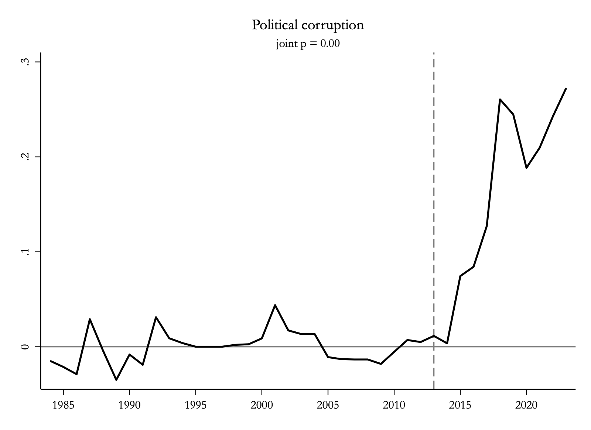
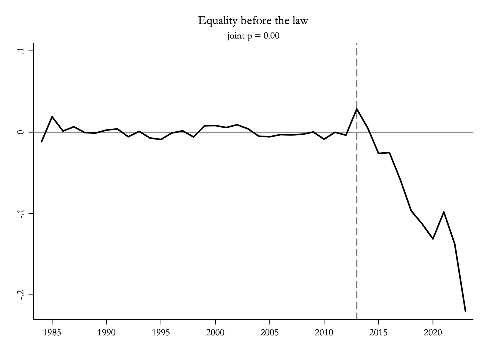
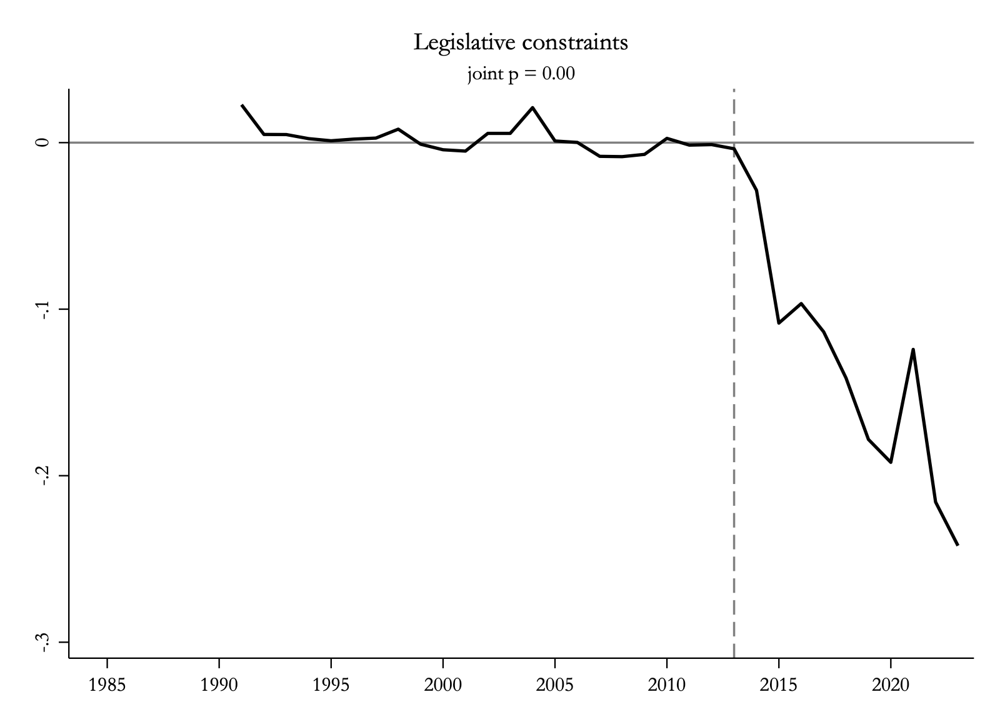
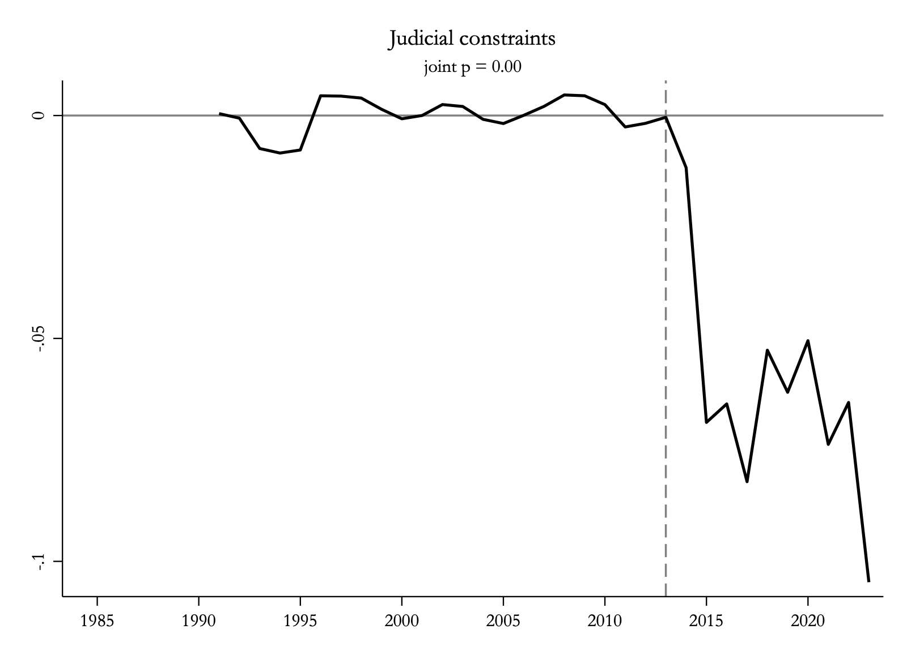
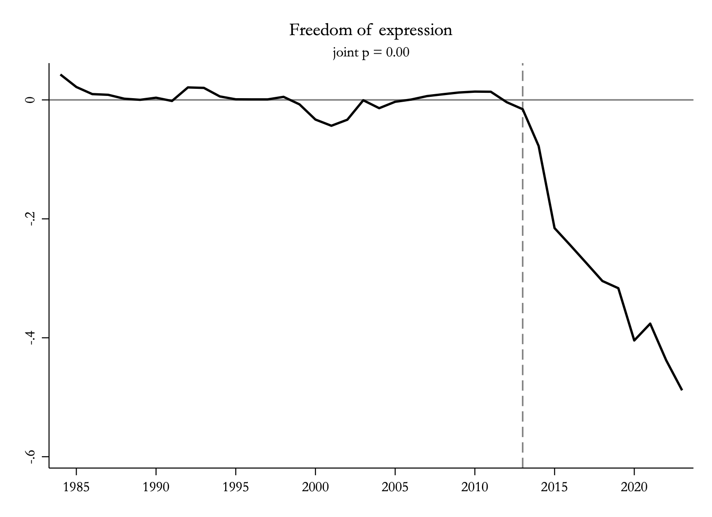
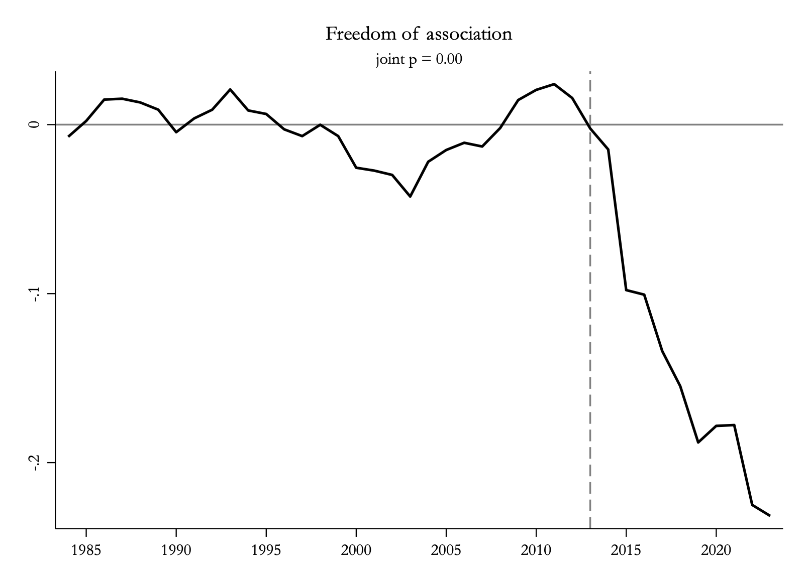
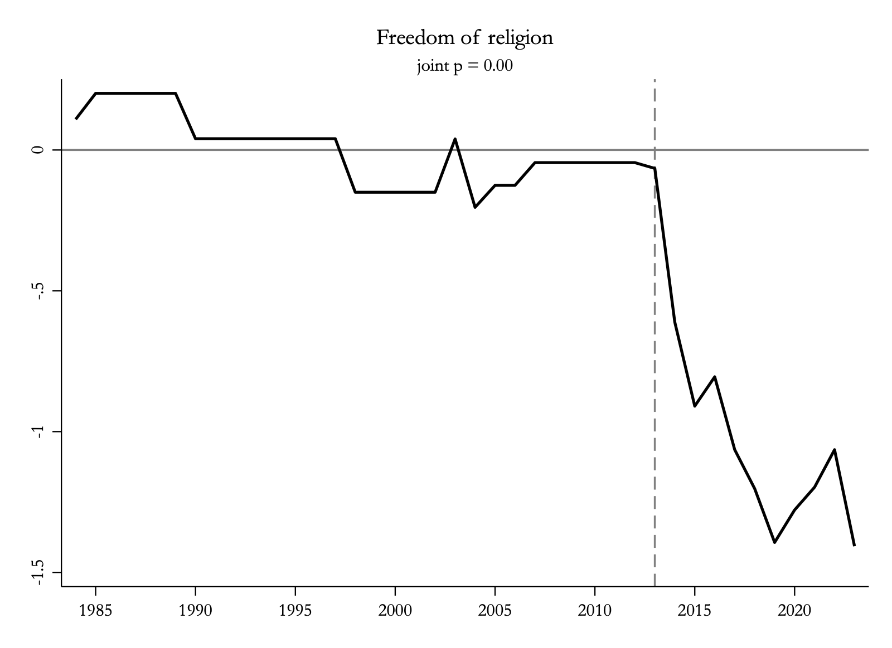
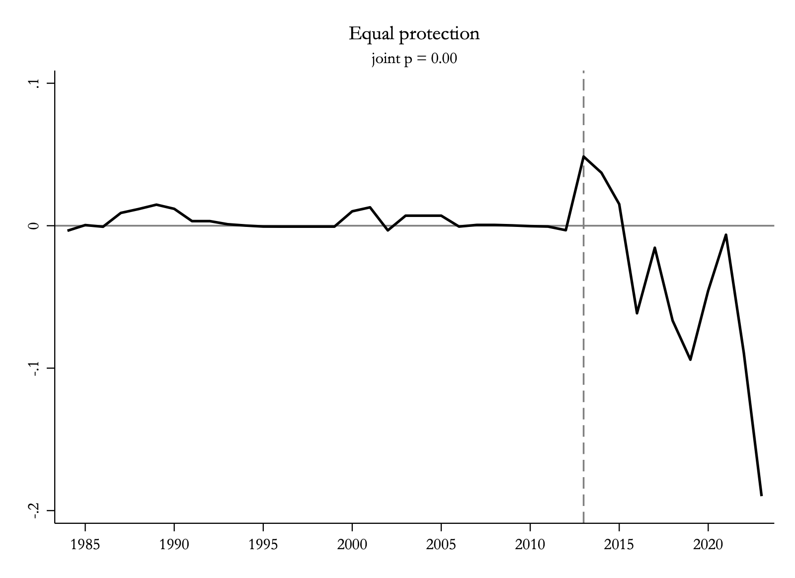
All ten treatment effects are jointly significant at the 0.00 level – meaning India’s post-2014 decline is larger than every single placebo we can construct from the comparison countries, in all ten cases. Half the indicators end up more than 45% below their counterfactuals. And this is not because the counterfactuals soar: after 2014, they barely move. India falls.
| Indicator | Gap | As % of India’s 2013 level | Joint p-value |
|---|---|---|---|
| Polyarchy (electoral democracy) | −0.391 | −60.2% | 0.00 |
| Liberal democracy | −0.360 | −69.1% | 0.00 |
| Legislative constraints on the executive | −0.242 | −28.8% | 0.00 |
| Judicial constraints on the executive | −0.105 | −12.7% | 0.00 |
| Political corruption (higher = more corrupt) | +0.272 | +46.8% | 0.00 |
| Equality before the law | −0.221 | −30.4% | 0.00 |
| Freedom of association | −0.232 | −29.6% | 0.00 |
| Freedom of expression | −0.488 | −56.2% | 0.00 |
| Freedom of religion | −1.407 | −168.7% | 0.00 |
| Equal protection under the law | −0.190 | −26.1% | 0.00 |
| Gaps are in the units of each index in the final treatment year. All indices run 0–1 except freedom of religion (interval scale). Joint p-values are standardized post-treatment p-values from randomization inference. | |||
The candidate who campaigned hardest against corruption presided over a 47% rise in it – relative to the India that never elected him.
04 · The 60-month economy
This is the strongman bargain many observers assumed Modi was offering: trade some democracy, get development. So here is the economic half of the report card – real income per person, India versus the India-without-Modi.
38% Ethiopia · 28% China · 25% Bangladesh · 7% Pakistan · 2% Philippines. An odd-sounding cocktail – until you see that it matches real India’s income path for thirty straight years with an average miss of about $59, roughly 1% of India’s 2013 income. Thirty years of almost perfect fit is unlikely to be accidental.
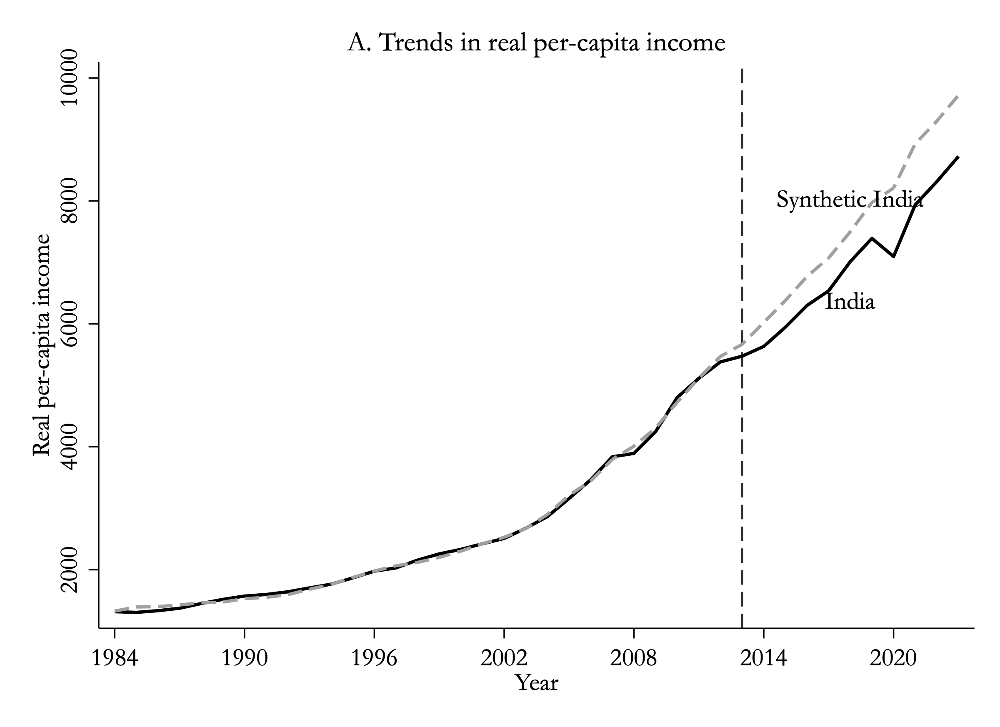
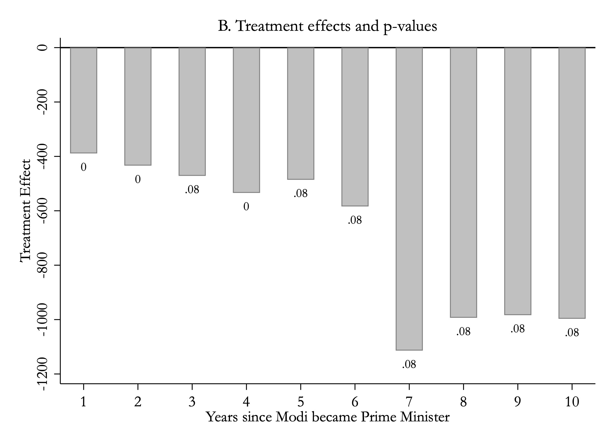
By the end of the sample, the average Indian earns roughly a thousand dollars a year less than the counterfactual says they would have without Modi – in an economy where that is a serious fraction of income. In three of the first four years, India’s shortfall is larger than every placebo we can generate (p = 0.00); in the other seven it is beaten by exactly one (p = 0.08).
If you want to be a stickler about the 0.08s, be our guest – because the promise wasn’t “no worse than business as usual.” The promise was to beat it. Read the result as significant underperformance or as a failure to outperform: either way, the 60 months came and went, and so did 120.
The usual objections don’t rescue it. Demonetization was Modi’s own policy – that is the treatment, not a confound. Covid hit every donor country too, and dropping the last four years changes nothing about the verdict. And if you believe India’s post-2015 GDP revisions overstate its growth, as prominent critics argue, then our estimate is a floor, not a ceiling.
05 · The verdict
Not the Modi Promise – governance collapsed. Not the Strongman Bargain – the growth never showed up to pay for it. Not even the Democratic Paradox. Every one of the ten governance measures we look at is worse. So is income:
| Governance | |||
|---|---|---|---|
| Improves | Declines | ||
| Economy | Improves | Modi Promise | Strongman Bargain |
| Declines | Democratic Paradox | Worst CaseIndia · 2014–2024 | |
Modi asked to be judged against the India he inherited – against business as usual. By that standard, his rule is, at heart, a tale of broken promises.
06 · Kick the tires
Every claim above survives the standard batteries. Open any of these, or find the full details in the paper and the replication files.
The economic pool is full of one-party states – you cannot build a counterfactual for Indian democracy out of China and Vietnam. Plotted on the polyarchy index, India sits at the very top of the economic pool for years: outside its support.
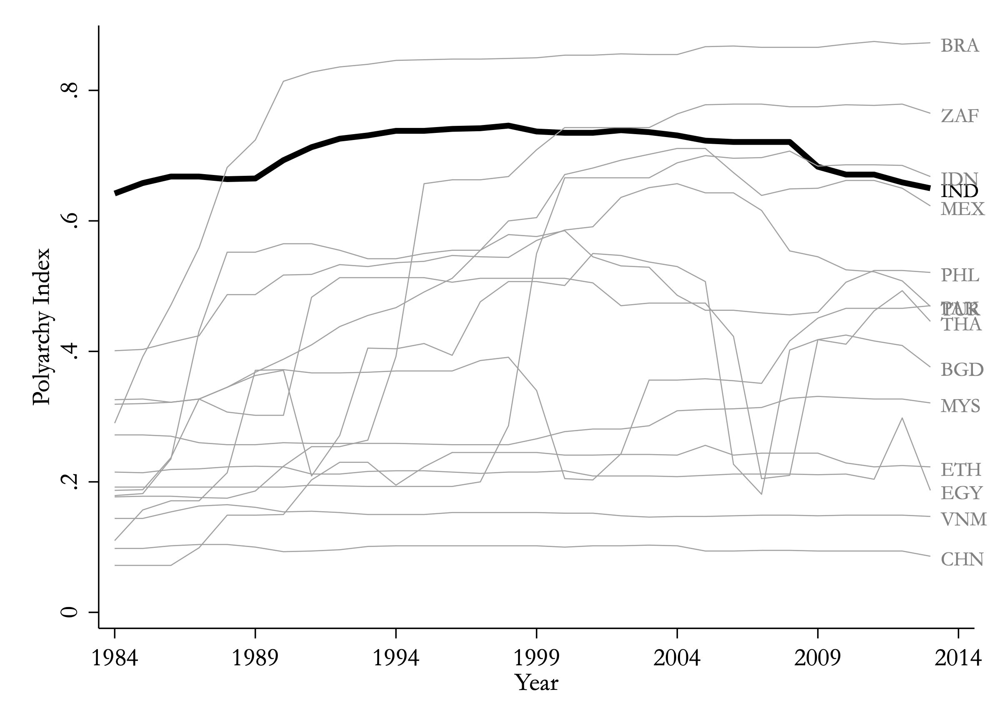
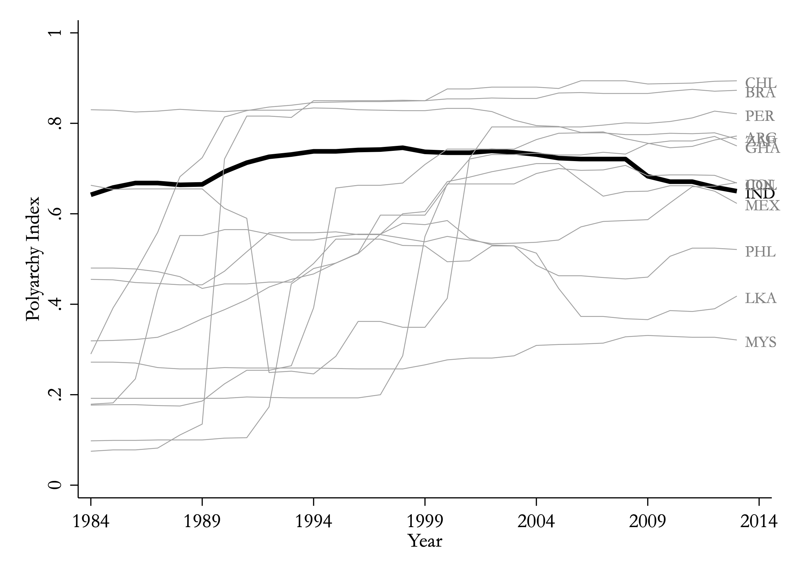
So for governance outcomes we use twelve developing-world democracies – Brazil, Argentina, Chile, Colombia, Peru, Mexico, South Africa, Ghana, Indonesia, Malaysia, the Philippines, Sri Lanka – which can and do mimic India’s pre-2014 trajectory. Synthetic India for polyarchy: 61.1% Argentina, 14.5% Sri Lanka, 13.4% Brazil, with a pre-treatment RMSPE of .017.
Pretend Modi took office in 2001, end the sample in 2010, and rerun everything. If our method were manufacturing gaps, it would manufacture one here. It doesn’t: no individual placebo effect is significant, and the joint p-value is 0.5 – fake-treatment India sits squarely in the middle of the fake-effect distribution.
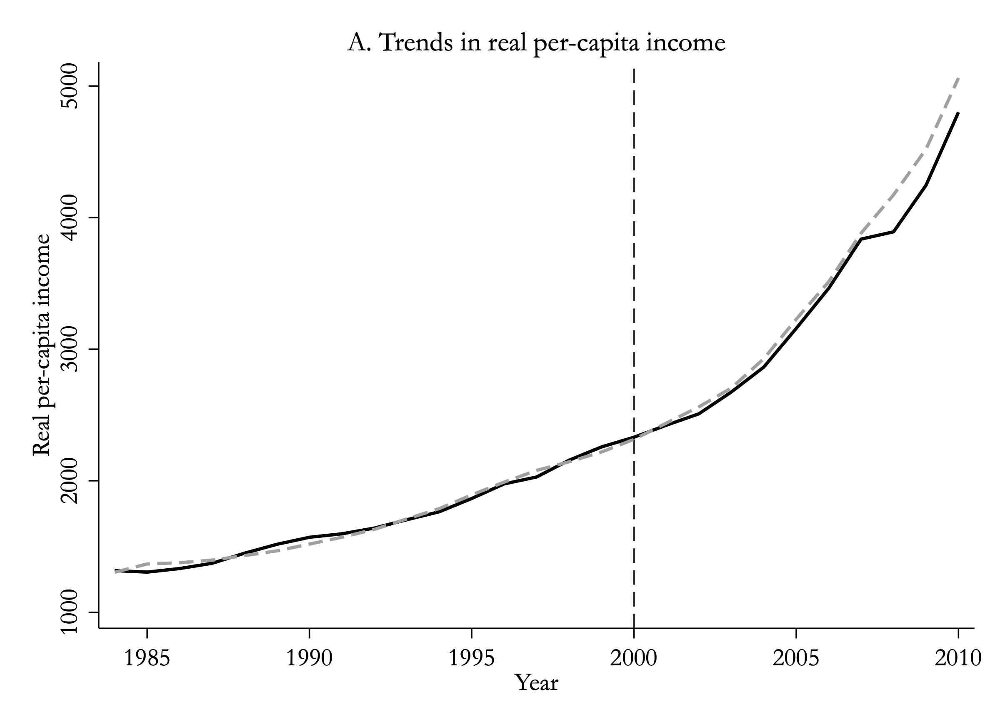
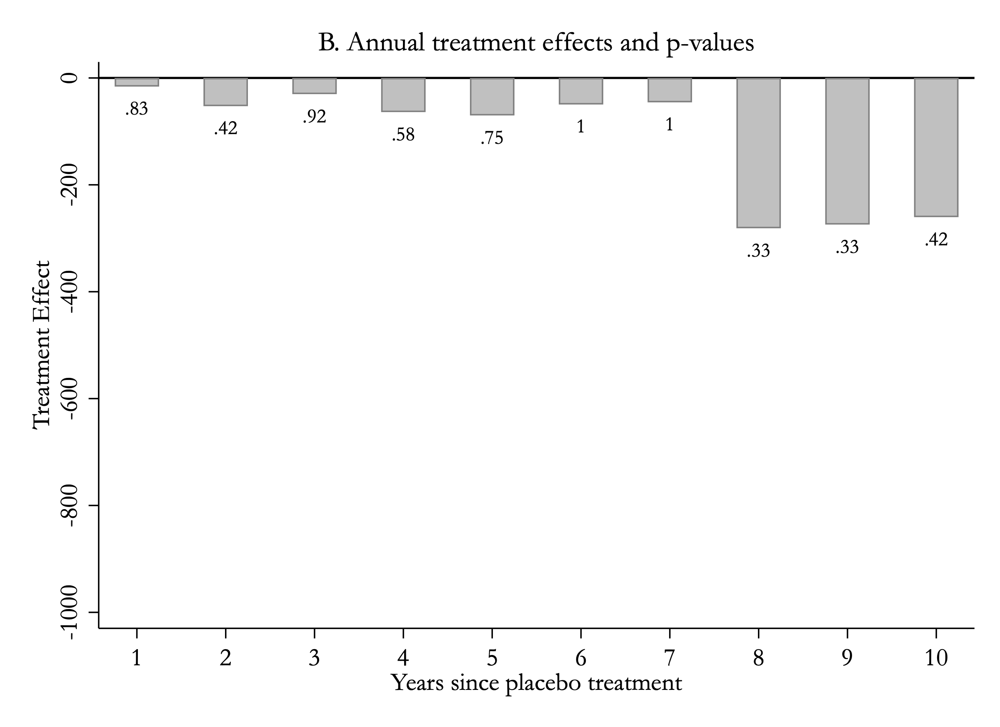
A known worry: researchers can tilt synthetic control results through their choice of matching variables. Following the recommendation of that literature, we re-estimate using every pre-treatment lag of income and nothing else. The results are nearly identical to the main model.
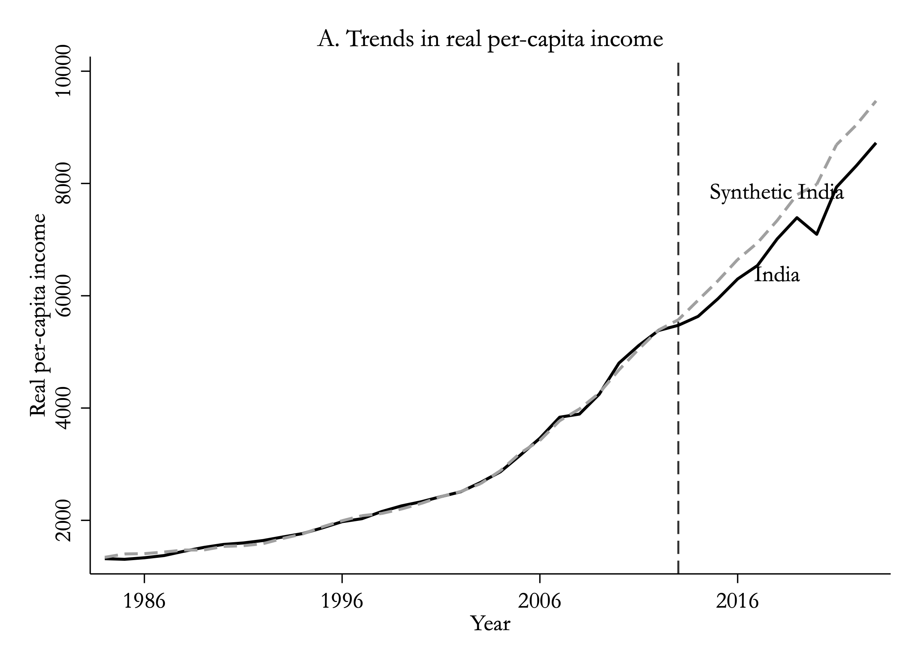
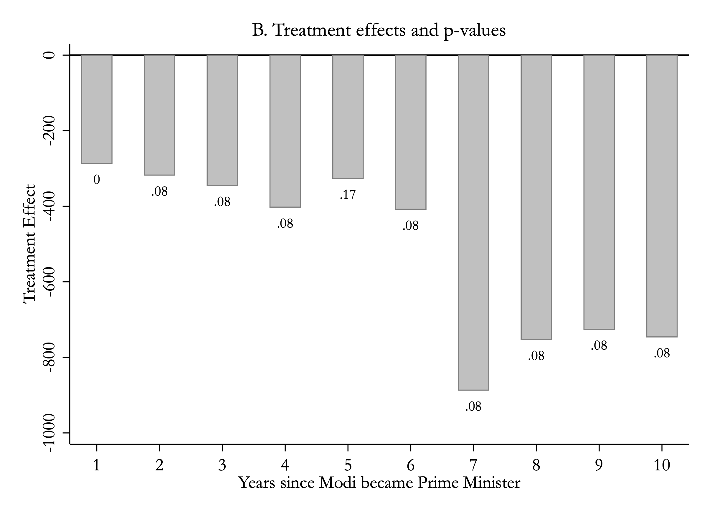
Some early readers objected to Ethiopia’s weight in the income counterfactual. Fine – drop it. The pre-treatment fit gets worse (RMSPE rises from 58 to 132), and the estimated damage gets bigger: India’s shortfall roughly doubles and becomes uniformly the most extreme in the placebo distribution, significant at 0.00 in every single year. Objecting to Ethiopia makes Modi look worse, not better.
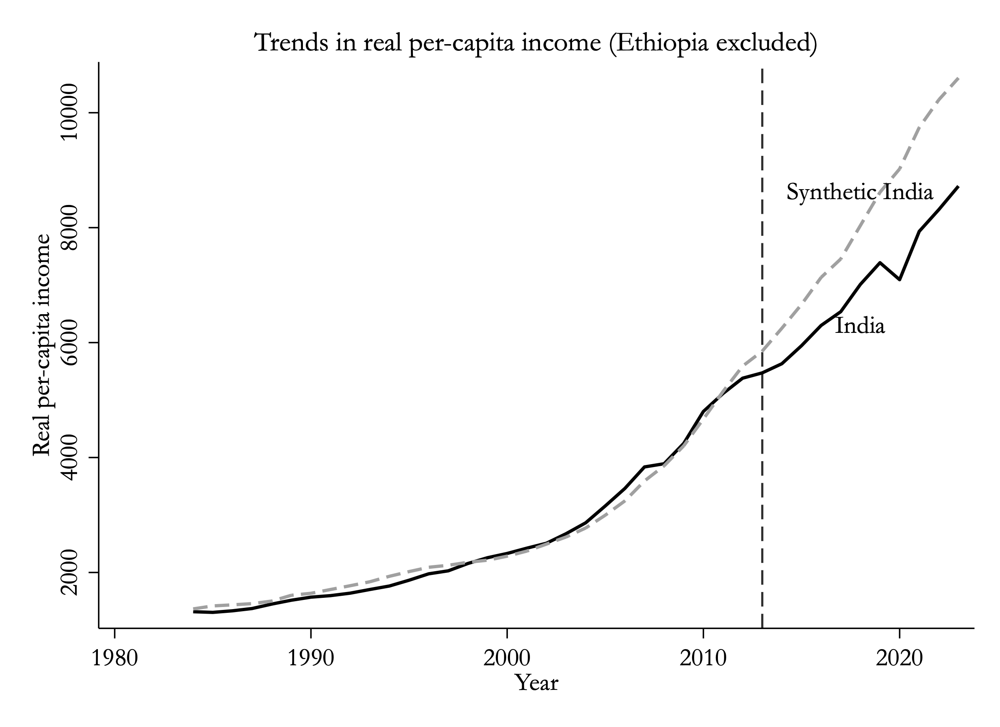
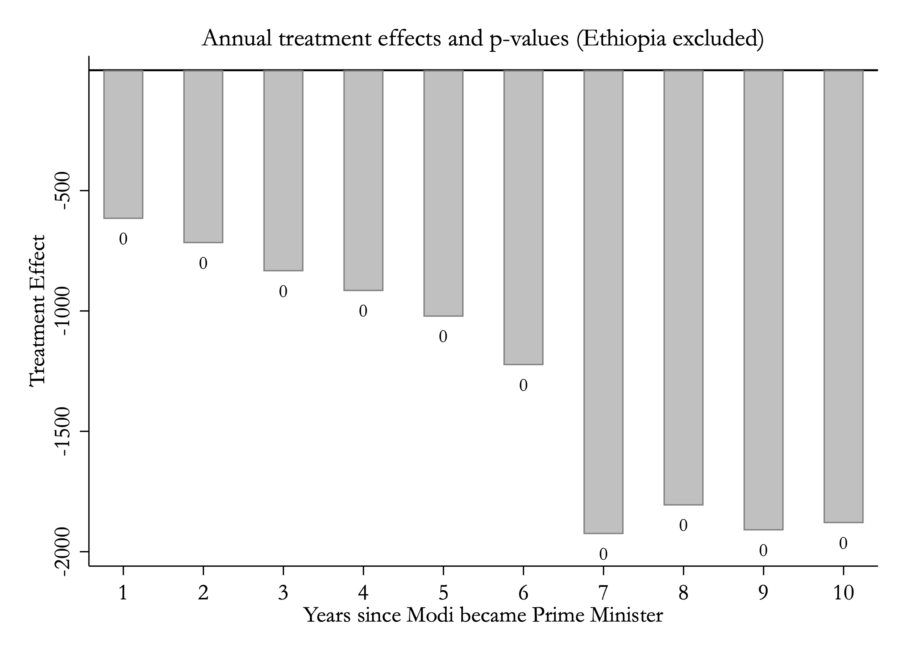
The paper’s Appendix A walks through each governance outcome individually – trends, annual effects, p-values, donor weights, and covariate balance for all ten models. Read it in the paper (SSRN).
07 · Materials
Every figure and table on this page comes from the working paper and its replication files. The data and the Stata code that produce them are posted in full.